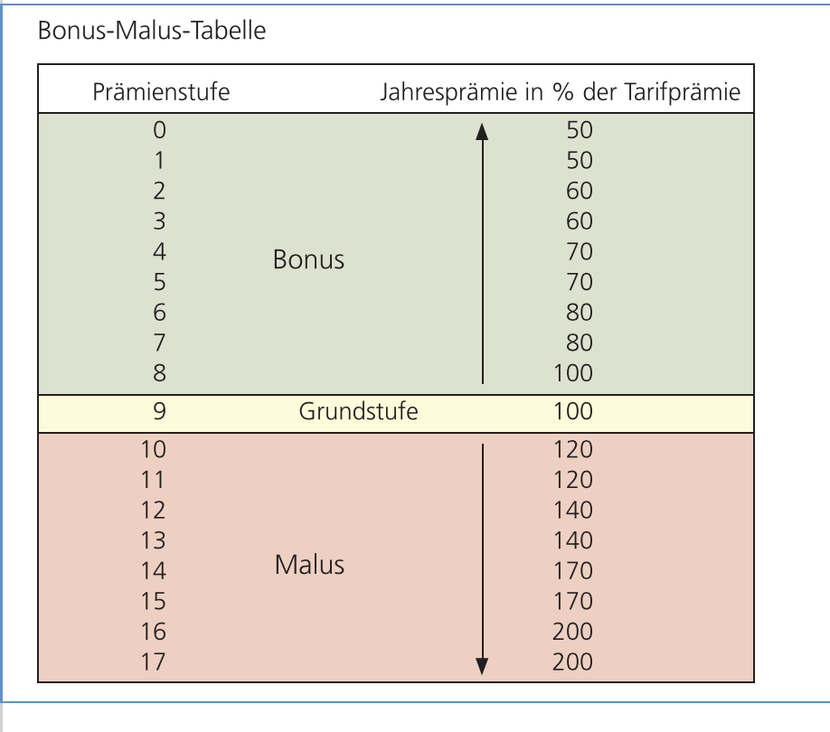

Was wird mithilfe eines Verhaltensgitter ermittelt?
Ist einem Unternehmer die Leistung oder das Wohl des Mitarbeiters wichtig.
9.9: am Besten, 1.1: am Schlechtesten
Unternehmensziele in der Strategischen Planung
Spezitisch
M
Akzeptanz
Realistisch
Termin
Grafik: Unternehmensziele (Seite 30, III)
Basisstrategien in der Strategischen Planung
Differenzierung zu den Mitbewerbern: z.B.: durch Serviceintervalle, schneller Service
Kostenführerschaft: günstige Preise
Nischenstrategie: auf Teilmärkte konzentriert (z.B.: Tiertransporter, …)
Berechnung des Cashflows (Praktika Methode)
Berechnung der fiktive Schuldtilgungsdauer
Formel: Cashflow aus der gewo¨hnlichen Gescha¨ftsta¨tigkeitEffektivverschultung
Analyse: Ergebnis über 15 Jahre → kritisch
Wie funktioniert ein Quicktest?
Schnelltest mit 4 Kennzahlen
Schwächen: nicht detailliert, verwendet Durchschnittswerte, Ergebnis kann bilanzpolitisch verfälscht werden
Umfeldanalyse (Tool der Strategischen Planung)
Die systematische Beobachtungen der Bereiche der Grafik.
Grafik: Umfeldanalyse (Seite 25, III)
Eigenschaften einer SWOT-Analyse
Es werden die Stärken und Schwächen, den Chancen und Risiken gegenübergestellt.
Grafik: SWOT-Analyse (Seite 32, III)
Aufgaben von Controlling
Denkhaltung: geht von der Komplexität des Unternehmens aus Unterstütz das Management auf den drei Ebenen (unten).
Grafik: 3 Managementebenen (Seite 22, V)
Informationen
ermittelt, beschaffen und bereiten von Informationen → Weiterleiten an Entscheidungsträger
Koordination: Management von verschiedene Abteilungen mit verschiednen Tools
Innovation
beobachtet Unternehmensumfeld und Erwartungen und weiterleiten der Beobachtungsergebnisse an Management.
richtige Verwertung der Innovationsimpulse
Sparring: interne betriebswirtschaftliche Beratung des Managements
Als „Treiber”: Management reagiert zu langsam auf Veränderungen.
Als „Bremser”: Management reagiert zu schnell auf Veränderungen.
Unterschied und Aufgaben von Controllern und Managern
Controller: Tauschen sich gegenseitig aus.
Grafik: Schnittmenge Controlling (Seite 24, V)
Ausmaß der Aufgaben beim Controlling
Abhängig von der Unternehmensgröße!
Großunternehmen: Bereitstellung der relevanten Informationen vom Controller und Umsetzung vom Management.
Mittelgroße Unternehmen: Management macht einen Teil der Controlling-Tätigkeit selbst
Kleinunternehmen: meist keinen eigenen Controller → Unternehmer/Management übernimmt die Aufgabe
Eingliederung von Controlling
Stabsstelle: beschränkt sich auf seine beratende Funktion (nicht weisungsbefugt) → unterstützt die Leitung durch Gewinnung und Aufbereitung von Informationen
Vorteil: der Controller bleibt unabhängig
Nachteil: Durchsetzung schwierig
Linienstelle bzw. „Funktionalcontrolling”: eine zentrale Controlling-Abteilung → Spezialisierung möglich
Grafik: Controllingeinheiten (Seite 25, V)
Was ist ein Finanzplan?
Dort werden alle laufenden und einmaligen Ein- und Auszahlungen festgehalten.
Was sind Maßnahmen, um die Einzahlungen zu erhöhen?
laufende Einzahlungen erhöhen
Kredit aufnehmen
Privateinlagen, Gesellschafter
Was sind Maßnahmen, um die Auszahlungen zu senken?
bei laufenden Auszahlungen sparen → Rabatt beim Einkauf
Privatentnahmen verringern
Was sind die Finanzierungsquellen und welche Merkmale gibt es eines Unternehmers?
Welche Arten der Innenfinanzierung gibt es?
Welche Arten der Außenfinanzierung gibt es?
Welche Arten der Kreditfinanzierung gibt es?
Lieferantenkredit: Lieferung auf Ziel → zahlbar innerhalb von … Tagen
Kontokorrentkredit: an ein Girokonto gebunden und wird bis zu einer maximalen Höhe („Kreditrahmen“ oder „Kreditlimit“) ausgegeben
Langfristige Bankdarlehen→ Einmalig ausgezahlen und in Raten zurückbezahlen
Welche Sonderfinanzierungsformen gibt es?
Factoring: Buchforderungen werden an eine Factoringbank verkauft.
Leasing: Überlassung von Investitionsgütern
Sale and lease back: Investitionsgüter werden gekauft und über Leasing finanziert
Was sind Tools für Investitionsentscheidungen?
Kostenvergleichsrechnung: Kosten (z.B.: pro Jahr) werden berechnet und verglichen.
Rentabilitätsvergleichsrechnung: Mit welchem Zinssatz verzinst sich die Investition → Gewinn im Vergleich zum eingesetzten Kapital
Amortisationsrechnung: In welchem Zeitraum rechnet/amortisiert sich die Investition?
Scoringmethode: z.B.: Punkte werden an Fahrzeuge vergeben
Wie funktioniert die Scoring-Methode?
Merkmale und Kriterien werden mit Punkten vergeben → höchste Punkteanzahl gewinnt
Wie wird eine Kostenvergleichsrechnung gerechnet?
Kalk. Abschreibung → (AW – RW) / Nutzungsdauer
Kalk. Zinsen → (AW + RW / 2) * Zinssatz
Variable Kosten
Fixkosten
kritische Menge/Auslastung: Ab diesem Absatz ist die andere Investition billiger. → Differenz Fixkosten/Differenz var. Kosten pro Stück
Wie wird eine Rentabilitätsvergleichsrechnung gerechnet?
Gewinn = Ertrag - var. Kosten - Fixkosten - Abschreibung
Das Firmenbuch ist ein öffentliches Verzeichnis aller eingetragener Unternehmen → erhöht das Vertrauen in das Unternehmen; Es wird vom jeweiligen Bezirksgericht verwaltet.
Wer muss eingetragen sein? (Firmenbuch)
Alle großen Unternehmen müssen jedoch eingetragen werden.
Unternehmen die von mehreren Unternehmern gemeinsam betrieben werden (Personen/Kapitalgesellschaften)
Einzelunternehmen die in zwei aufeinanderfolgenden Geschäftsjahren mehr als 700.000€ oder in einem Jahr mehr als 1. Mio. € Umsatz aufweisen.
Freiberufler müssen nicht eingetragen sein.
Auf muss man bei der Firmenbezeichnung beachten?
Wahl der Firmenbezeichnung: Grundsätzlich freie Wahl der Bezeichnung, muss aber Hinweis auf Rechtsform enthalten.
Die Firmenbezeichnung: muss Unterscheidungskraft besitzen; darf nicht irreführend sein; Einzelunternehmen: nur Namen des Einzelunternehmers/Gesellschafter (muss aber nicht)
Beispiel: Firmenbezeichnung fremder Name
Rechtsformen der Unternehmen?Grafik: Rechsformen der Unternehmen (Seite 6, II)
Regelungen: UGB und ABGB
Einzelunternehmen: Eigentum einer einzigen Person. → Er entscheidet und haftet allein mit seinem Unternehmens- und Privatvermögen.
Einzelunternehmen und Personengesellschaften bei über 1. Mio Euro Jahresumsatz (oder 700.000€ bei 2 aufeinanderfolgenden Jahren)
Freiberufler und Landwirte als Personengesellschaft/Einzelunternehmen müssen trotz Umsatzüberschreitung keine DB führen. → „Einnahmen-Ausgaben-Rechnung” bzw. Gewinnermittlung pauschaliert
Allgemeine Eigenschaften von PersonengesellschaftenGrafik: Personengesellschaften (Seite 14, II)
Kapital bei PersonengesellschaftenGrafik: Kapital (Seite 15, II)
Risiko bei Personengesellschaften
Offene Gesellschaft: Gesellschafter haften unbeschränkt (mit Privatvermögen) und solidarisch (jeder beliebige könnte für den Gesamtbetrag haftbar gemacht werden)
Kommanditgesellschaft
Komplementäre: unbeschränkt und solidarisch
Kommanditisten: beschränkt (nur mit der Einlage)
Stille Gesellschaft: beschränkt (nur mit der Einlage)
Mitarbeit und Kontrolle bei Personengesellschaften
Offene Gesellschaft:
zur Mitarbeit berechtigt und verpflichtet
haben Kontrollrechte
Kommanditgesellschaft
Komplementäre: zur Mitarbeit berechtigt und verpflichtet
Kommanditisten: kein Mitarbeits- und beschränktes Kontrollrecht
Stille Gesellschaft: kein Mitarbeitsrecht; Kontrollrechte: Abschrift der Bilanz, Jahresabschlüsse
Namen bei Personengesellschaften
OG und KG sind haben eine Eintragungspflicht im Firmenbuch
Vorteile: Beteiligung ohne Pflicht zur Mitarbeit, Geheimhaltung der Beteiligung
Nachteile: Keine Beteiligung am Wertzuwachs (Bei Ausscheidung: nur Anspruch auf die Einlage), Beschränkte Kontrollmöglichkeiten
Eigenschaften/Arten von KapitalgesellschaftenGrafik: Kapitalgesellschaften (Seite 23, II)Grafik: Arten von Kapitalgesellschaften (Seite 24, II)
Eigenschaften einer GmbH
Hälfte des Stammkapitals kann in Vermögensgegenstände sein.
Stammkapital: € 35.000
Mindesthöhe des Geschäftsanteils: € 70
Gesellschafter bringen sogenannte Stammeinlagen auf.
Recht auf Gewinnanteil und Stimmrecht auf der Generalversammlung.
Eigenschaften einer Aktiengesellschaften (AG)
Grundkapital (Summe der Nennwerte aller Aktien): € 70.000
Mindestnennwert einer Aktie: € 1
Aktionäre kaufen Aktien und sind Eigentümer.
Recht auf Gewinnanteil (Dividende) und Stimmrecht auf der Hauptversammlung.
Risiko bei Kapitalgesellschaften
GmbH: Haftung auf die Stammeinlage beschränkt.
AG: Haftung auf die Einlage beschränkt.
Beide haften als juristische Person mit dem gesamten Betriebsvermögen.
Mitarbeit und Kontrolle bei KapitalgesellschaftenGrafik: Mitarbeit und Kontrolle (Seite 25, II)
Vorteile/Nachteile bei KapitalgesellschaftenGrafik: Vorteile/Nachteile (Seite 26, II)
Sonderform der Europäische Aktiengesellschaft (SE)
z.B.: STRABAG SE
„Societas Europea” → überall in der EU tätig ohne Gründung einer Tochtergesellschaft (durch EU-Recht geregelt)
Mindestkapital: € 120.000
Leitung: Verwaltungsrat („Board”)
Franchising
Franchisegeber erlaubt Franchisenehmer gegen Bezahlung einer Franchisegebühr den Markennamen und Marketing-Know-how zu verwenden.
Eigenschaften/Definition einer Erwerbs- und Wirtschaftsgenossenschaft
Vereine von nicht geschlossener Mitgliederzahl zur Förderung des Erwerbs oder der Wirtschaft ihrer Mitglieder.
Haben eine eigene Rechtspersönlichkeit und sind eine juristische Person.
Grafik: Genossenschaften (Seite 32, II)
Tätigkeit ist nicht in erster Linie auf Gewinn ausgerichtet, sondern auf die Förderung ihrer Mitglieder.
Doppelstellung der Mitglieder: sind „Unternehmer” und ihre eigenen „Kunden”
Höhe und Anzahl der Geschäftsanteile, die vom einzelnen Mitglied zu zeichnen sind, werden durch die Satzung bestimmt.
Besonderheiten von Erwerbs- und Wirtschaftsgenossenschaften
Mitglieder werden unterstützt.
Sie haften mit der eigenen Einlage.
Arten von Erwerbs- und Wirtschaftsgenossenschaften
Einkaufsgenossenschaft (Bezugs- und Rohstoffgenossenschaft)
Gemeinsamer Einkauf von großen Mengen und Aufteilung auf die Mitglieder → Kleingewerbetreibende können billiger Einkaufen und dem Wettbewerb mit Großbetrieben besser begegnen.
Verkaufsgenossenschaft (Absatzgenossenschaft)
Erzeugnisse der Mitglieder werden durch eine gemeinsame Verkaufsstelle verkauft.
Verringert die Kosten → keine Lagerkosten und kein eigener Vertrieb nötig
Höhere Auswahl für Kunden
Kleingewerbe hat eine größere Möglichkeit auf große Aufträge
Verwertungsgenossenschaft
Verarbeiten und Verwertung der Produkte der Mitglieder
Molkereigenossenschaft
Winzergenossenschaft
Obst- und Gemüsegenossenschaft
Nutzungsgenossenschaft
Gemeinsame Nutzung von Anlagen und Einrichtungen (z.B.: große landwirtschaftliche Maschinen → Mähdrescher und Traktoren)
Kreditgenossenschaft
Gewährt Kredite an die Mitglieder, die keinen Kredit bei der Bank bekommen, weil die Beträge zu klein waren oder die Sicherheiten nicht ausreichen.
Raiffeisenbanken: früher Kreditgewährung an die bäuerliche Kreise
Volksbanken (gewerbliche Kreditgenossenschaften): hauptsächlich Kleingewerbetreibende
Bau- und Siedlungsgenossenschaft
Den Mitgliedern den Erwerb von Grund und Boden erleichtern oder Einrichtung von Siedlungshäusern und Genossenschaftswohnungen.
Organisation einer Erwerbs- und Wirtschaftsgenossenschaft
Generalversammlung: Versammlung der Mitglieder → wählen Aufsichtsrat und Vorstand (jedes Mitglied hat eine Stimme, außer die Satzung sieht etwas anderes vor.)
Aufsichtsrat: Kontrollorgan, dass den Vorstand kontrolliert. (ab 40 Arbeitnehmern vorgeschrieben)
Vorstand: Geschäftsführung (muss Mitglied der Genossenschaft sein)
Wie werden Gesellschaften bürgerlichen Rechts gegründet?
als Arbeitsgemeinschaft → z.B.: bei größeren Bauprojekten
als Vorgesellschaft → bevor die AG ins Firmenbuch eingetragen wird (Satzung noch nicht beschlossen)
Eigenschaften einer Gesellschaft bürgerlichen Rechts
Leistungen bzw. Sachen (Geld, Güter, Arbeit) werden zum gemeinsamen Nutzen eingesetzt.
kein Firmenbucheintrag → Keine Firma des UGB
Gesellschaftsvertrag → Geschäftsführung, Dauer der Gesellschaft, Gewinnverteilung
Rechte der Gesellschafter: Büchereinsicht, Kündigungsrecht (bei unbestimmter Zeit)
Haftung: unbeschränkt und solidarisch
Gewinngrenze: 700.000 bzw. 1. Mio. → Umformung in Offene Gesellschaft/Kommanditgesellschaft
Eigenschaften einer Privatstiftung
Ein oder mehrere Stifter übertragen Teile ihres Vermögens an eine juristische Person
kein Eigentümer → vom Stiftungsvorstand verwaltet und von Stiftungsprüfern geprüft
Sitz im Inland
Zweck im Stiftungsvertrag → gemeinnützig bzw. zum Versorgen des Stifters
Eigenschaften/Merkmale einer Kommanditgesellschaft
Beibehalten der Vorteile einer Personengesellschaft + unbeschränkte Haftung ausgeschaltet.
Eigenschaften/Arten von Vollmachten
Bevollmächtigt werden auch Ehepartner, Kommanditisten, Stille Gesellschafter, …
Grafik: Vollmachten (Seite 40, II)
Allgemeine Eigenschaften von Prokuren
Firmenbucheintragung
Zu allen Arten von gerichtlichen und außergerichtlichen Geschäften und Rechtshandlungen.
Ein Prokurist darf:
Waren und Wertpapiere kaufen und verkaufen
Angestellte aufnehmen und entlassen
Handlungsvollmachten erteilen
Kredite aufnehmen
das Unternehmen bei Gericht vertreten
Ein Prokurist darf nicht:
Grundstücke belasten oder veräußern (außer besondere Ermächtigung)
das Unternehmen auflösen oder verkaufen
einen Prokuristen bestellen oder die Prokura übertragen
Inventar und Bilanz unterschreiben
Arten von Prokuren
Einzelprokura: keine Einschränkungen
persönliche Beschränkungen
Gesamtprokura: Prokurist nur gemeinsam mit einem oder mehrerer Prokuristen zeichnungsberechtigt.
Gemischte Prokura: Prokurist ist nur gemeinsam mit einem geschäftsführenden Gesellschafter oder Vorstandsmitglied zeichnungsberechtigt.
örtliche Beschränkungen: (Filialprokura) → Prokurist ist nur für eine oder mehrere Niederlassungen zeichnungsberechtigt.
Erteilung von Prokuren
durch einen im Firmenbuch eingetragenen Unternehmer
mittels ausdrücklicher Erklärung
Eigenschaften von Handlungsvollmachten
keine Firmenbucheintragung
Unternehmer oder Dritte werden zu bestimmten Geschäften oder Handlungen berechtigt.
Zusätzlich zu den Geschäften, denen Prokuristen untersagt sind:
Wechselverbindlichkeiten eingehen
Darlehen aufnehmen
das Unternehmen vor Gericht vertreten
Arten von Handlungsvollmachten
Generalvollmacht: erstreckt sich auf Geschäfte, die der Betrieb eines bestimmten Handelsgewerbes gewöhnlich mit sich bringt.
Artvollmacht: Vornahme einer bestimmten Art von Geschäft (z.B.: Einkäufer → einkaufen)
Ladenvollmacht: Verkaufen und Empfangnahmen, die in einem Laden gewöhnlich geschehen
Spezialvollmacht: Vornahme einer einzelnen und genau bestimmten Handlung (z.B.: Inkasso einer bestimmten Rechnung)
Erteilung einer Handlungsvollmacht
durch Unternehmer
Prokurist
Handlungsbevollmächtigter
Unterschiede zwischen Aufbau- und Ablauforganisation
Aufbauorganisation regelt, wer wofür zuständig ist und wer wem Anweisungen erteilen darf.
Ablauforganisation regelt, was in welcher Reihenfolge und wie und wo zu erfolgen hat.
Aufgaben, Stellen und Abteilungen
Aufteilung einer Aufgabe
Aufgabe kann in
Verrichtungen (z.B.: Bestellen, Kontrollieren, …) und
Objekte (z.B.: Fahrräder, Outdoorartikel, …) aufgeteilt werden.
Arten von Stellen
untergeordnete Stelle → ohne Weisungsbefugnis (z.B.: Lehrling in der Verkaufsabteilung)
Instanzen → mit Weisungsbefugnis (z.B.: Leiter der Einkaufsabteilung)
Stabstellen → beratende Funktion und ohne Weisungsbefugnis (z.B.: Controller, Statistiker)
Grundsätze
Es geht darum, wer wem Weisungen erteilen darf und wer wem übergeordnet ist.
Grundsätze nicht auswendig zu lernen.
Arten und Verwendung von Leitungssystemen
Eigenschaften/Vorteile eines Einliniensystems
Jede Stelle ist genau einer anderen Stelle unterstellt.
Vorteil: klarer Weisungsweg, Nachteil: Befehlswege sehr lang
Eigenschaften/Vorteile eines Stabliniensystems
In Instanzen (Linienstellen) und beratende Stabstellen (auch „Stäbe”) aufgeteilt.
Vorteil: Spezialkenntnisse der Stabstellen, Nachteil: unkontrollierter Einfluss
Eigenschaften/Vorteile einer Spartenorganisation
Betriebliche Funktionen werden für ein Produkt oder eine Produktgruppe in einer Sparte zusammengefasst.
Jede Stelle ist mehreren Instanzen unterstellt → flexibler, für Bereiche die sich schnell ändern
Produkt A kann von allen Abteilungen Weisungen erhalten
Bedeutung „formal”
Formal bedeutet „auf dem Papier”.
Informale Organisation (Definition/Elemente)
Informaler Führer: Führer, dessen Meinung von den Mitarbeitern anerkannt wird.
Informale Normen: Regeln, die nicht auf dem Papier existieren z.B.: Schäden werden selbst behoben
Informale Kommunikationsstrukturen: z.B.: Mitarbeiter kennen sich privat und reden miteinander, treffen sich im Buffet oder machen gemeinsam Sport. Vorteil: schnellere Kommunikation
Informale Gruppen: persönliche Zusammenschüsse (z.B.: durch gemeinsamen Sport, …)
Vorratsbeschaffung: Artikel ist immer auf Lager (ständige Lieferbereitschaft, kostengünstig durch hohe Mengen; hohe Lagerkosten, Gefahr auf Veralterung)
Einzelbeschaffung: Bestellung, wenn benötigt (kurze Lagerdauer, geringe Kapitalbindung; Lieferbereitschaft nicht immer möglich → Wartezeiten)
Just-in-Time Beschaffung: Bestellung, wenn für die Produktion benötigt (Hohe Konventionalstrafen)
Kosten der Materialwirtschaft
Beschaffungskosten: unmittelbar (Menge * Preis pro Einheit) und mittelbar (Personalkosten, Bestellung, Terminüberwachung)
Lagerhaltungskosten: Kapitalbindungkosten, Lagerraumkosten, Lagerpersonalkosten und Wertminderung (Schwund, …)
Fehlmengenkosten: Preisdifferenzen (Beschaffung von Ersatzgütern), entgangene Gewinne, Konventionalstrafen oder Goodwillverluste (Ruf leidet)
Liefertermin
Zeitpunkt, an dem der Verkäufer dem Käufer die Ware übergeben muss.
Lieferort
Ort, an dem der Verkäufer dem Käufer die Ware übergeben muss.
Die Übergabe kann auf diese Arten erfolgen:
Körperlich: Ware wird dem Käufer übergeben
Elektronisch: Werden durch Download übergeben (Spiele)
Symbolisch: Nur Papiere werden übergeben (Frachtpapiere) → Käufer kann über die Ware verfügen.
Erfüllungsort: Eigentum der Ware wird vom Verkäufer auf den Käufer übertragen.
Kaufvertragsklauseln
Kaufvertragsklauseln klären wo die Kosten des Transports,Eigentum und Risiko auf den Käufer übergehen. Man unterscheidet zwischen Ein- („ab”, „frei”) und Zweipunktklauseln („frachtfrei”).
Verpackung
Verpackungen werden genutzt um:
Ware durch Einwirkungen von außen ( Schläge Stöße) und gegen Verlust (ausrinnen) zu schützen
Die Transport und Lagerfähigkeit zu erhöhen
Die Verkaufsfähigkeit zu erhöhen (Geschenkpackungen)
Arten von Mängel
Offene Mängel: Mit freiem Auge erkennbar
Verdeckte Mängel: sind nicht sofort erkennbar: T-Shirt verfärbt sich beim Waschen.
Arglistig verschwiegene Mängel: Verkäufer kennt Mangel verschweigt ihn aber dem Kunden.
Wesentliche nicht geringfügige Schäden: bekomme grünes iPhone obwohl rotes bestellt
Geringfüge Mängel: hindert nicht am Gebrauch: Lackschaden am Auto.
Behebbare Mängel: liegt vor, wenn Ware repariert werden kann
Unbehebbarer Mangel: kann nicht beseitigt werden
Gewährleistung
Verkäufer haftet für Mängel, die bereits bestanden, als die Ware übergeben wurde.
Gewährleistungspflichten:
Gewährleistung bei bewegl. Sachen: Laut ABGB 2 Jahre (Handy)
Gewährleistung bei unbewegl.Sachen: Laut ABGB 3 Jahre ab Übergabe (Bauten)
Beweislastumkehr: Tritt ein Mangel innerhalb von 6 Monaten auf (Neu: B2B → 6 Monate, B2C → 12 Monate), muss der Verkäufer beweisen, dass der Mangel bei der Übergabe noch nicht bestanden hat. Danach muss der Käufer beweisen, dass er bereits bestanden hat
Gewährleistung bei Montagefehlern
Gewährleistung für Werbeaussagen
Arglistig verschwiegene Mängel: Hier beträgt die Gewährleistungsfrist 30 Jahre
Sollte die Gewährleistung eintreten sieht das Gesetz diese Möglichkeiten vor:
Verbesserung, Nachlieferung, Reparatur, Austausch
Preisminderung
Wandlung
Produkthaftung
Maximal 10 Jahre.
Die Produkthaftung ist in einem eigenen Gesetz geregelt. Sie bedeutet, dass der Hersteller für Schäden haftet, die durch ein Fehlerhaftes Produkt an Personen oder Sachen (ab 500 Euro) entstehen.
Auch der Verkäufer und Importeur haften.
Für das Produkt selbst nicht.
Rechtlichen Bedingungen eines Vertrags (Grafik)
Übereinstimmende Willenserklärung
Eine übereinstimmende Willenserklärung ist die eindeutige Zustimmung der Vertragspartner zumVertragsinhalt. Sie kann ausdrücklich oder schlüssig erfolgen.
ausdrücklich
mündlich
schriftlich
elektronisch → im Internet
schlüssig: aus Handlung der Partner geht eindeutig hervor, was sie wollen.
Geschäftsfähigkeit
Vertragspartner können Verträge nur abschließen, wenn beide Geschäftsfähig sind. Geschäftsfähigkeit hängt vom Alter ab:
nicht geschäftsfähig
geringwertige Sache dürfen erworben werden
beschränkt geschäftsfähig
dürfen Schenkungen annehmen, wenn sich dadurch keine Verpflichtungen ergeben
erweitert geschäftsfähig
dürfen über das verfügen, was sie selbst verdienen → darf den Lebensunterhalt nicht gefährden
können sich vertraglich zu Dienstleistungen verpflichten
Gesetzliche Grundlagen
Usancen: ungeschriebene Gesetze → Kiste wird mit 24 Flaschen bepackt.
Bestandteile
5 Bestandteile:
Warenart (Qualität)
muss im Kaufvertrag festgelegt werden. Unter Qualität versteht man die Eigenschaften der Ware. Mit folgenden Kriterien kann man die Qualität festlegen:
vertretbare (fungible) Waren: sind Waren die alle dieselben Eigenschaften haben → z.B.: DVDs mit den gleichen Eigenschaften
nicht vertretbare (nicht fungible) Waren: sind Waren mit einzigartigen Merkmalen → z.B.: Auto mit bestimmter km-Leistung
Welche Arten der Motivation gibt es ?Grafik: Arten der Motivation (Seite 177, III)
Was sind die 5 Kategorien der Bedürfnishierarchie?Bedürfnispyramide (Seite 178, III)
Welche Motivationstheorien gibt es?
Herzbergs Zwei-Faktoren-Theorie
Arbeitnehmer wurden nach Faktoren gefragt, die zur Zufrieden- oder Unzufriedenheit führen.
Motivatoren (direkter Zus. mit der Tätigkeit): Anerkennung, Aufstieg, Verantwortung
Hygienefaktoren (indirekter Zus. mit der Tätigkeit): Bezahlung, Arbeitsbedingungen, Arbeitssicherheit, Unternehmenspolitik
McGregors Theorien X und Y
Theorie X: pessimistisches Menschenbild
Theorie Y: optimistisches Menschenbild
Was sind die Aufgaben des Personalmanagement (allgemein)?
Hat die Aufgabe, Interessen der Arbeitgeber/-nehmer zu berücksichtigen und auf Interessen des gesellschaftlichen Umfelds (Kunde, Lieferanten, Umwelt) zu achten.
Grafik: Aufgaben von PM (Seite 122, III)
Was sind die Arten des Bedarfs (Personal)?
quantitativer Bedarf: Wie viele Mitarbeiter werden benötigt?
qualitativer Bedarf: Welche Qualifikationen sollen die Mitarbeiter besitzen?
zeitlicher Bedarf: Wann wird das Personal benötigt?
Was passiert bei der Personalbedarfsplanung (Grafik)?Grafik: Personalbedarfsplanung (Seite 125, III)
Maßnahmen bei: 1. zu viel bzw. zu wenig Personal? 2. Personal mit schlechte Qualifikationen?
Zu viel Personal: Teilzeitarbeit, entlassen schwierig (Entlassungsfrist, bzw. Grunud), weniger Arbeitenszeiten
Zu wenig Personal: Neue Mitarbeiter einstellen
Personal hat nicht die passende Qualitfikation: Weiterbildungen
Was sind Schwankungen und welche Arten gibt es (Personal)?
Schwankungen (kurz-, mittel und langfristig): wegen Haupt-/Nebensaison, Mitarbeiten gehen in Pension (langfristig), Krankheiten (kurzfristig), Urlaub (kurzfristig)
Grafik: Arten von Schwankungen (Seite 126, III)
Was sind Maßnahmen gegen Freisetzungen?Grafik: Maßnahmen Freisetzungen (Seite 126, III)
Was ist ein gutes Mittel beim quantitativen Personalbedarf?
Die Stellenbeschreibung: enthält Arbeitsanforderungen → Schulbildung, Spezialkenntnisse, Berufserfahrung, Veranwortung (selbstständige Entscheidungen), körperliche Belastung und Umwelteinflüsse (Lärm, Feuchtigkeit)
Was sind Maßnahmen bei der Personalbeschaffung bzw. Deckung des Personalbedarfs?
Was sind Teilbereiche der Personalentwicklung?Grafik: Teilbereiche PE (Seite 168, III)
Welche Punkte muss ein humanisierter Arbeitsplatz berücksichtigen?Grafik: Humanisierung der Arbeit (Seite 172, III)
Probleme bei betrieblichen Sozialleistungen: Sozialleistungen aus guten Wirtschaftsjahren können schwer abgebaut werden; keinen Lohnvergleich zwischen verschiedenen Betrieben
Welche Punkte beinhaltet eine bessere Arbeitsorganisation?
Job-Enlargement: Erweiterung des Arbeitsbereichs
Job-Enrichment: Erweiterung des Verantwortungsbereiches
Job-Rotation: systematisches Wechseln des Arbeitsplatzes
teilautonome Arbeitsgruppen → Kombination aus Job-Enrichment und Job-Rotation
Welche Pflichten hat ein Arbeitnehmer und Arbeitgeber?
Arbeitnehmer: persönliche Arbeitsleistung, Treuepflicht (Verschwiegenheit, Konkurrenzverbot → keine Nebenbeschäftigungen, keine Geschenkannahme)
Arbeitgeber: Zahlung des Entgeld, Gleichbehandlung, Arbeitnehmerschutz (Gefahrenschutz, Arbeitszeitschutz und Verwendungsschutz (z.B.: bei Kindern))
Wie viel Urlaub steht einem Arbeitnehmer zu?
30 Werktage (nach 6 Monaten in voller Höhe)
Unterschied zwischen Mutterschutz und Karenzurlaub?
Mutterschutz: 8 Wochen vor, bis 8 Wochen nach dem Geburtstemin → Gehalt in voller Höhe
Karenzurlaub: bis zum 2. Geburtstag des Kindes → ohne Entgeld
Wie kann ein Arbeitsverhältnis enden?
einvernehmlich
Kündigung durch den Dienstgeber → kein Grund erforderlich (immer zum Quartalsende)
Kündigung durch den Dienstnehmer → Einhaltung der einmonatigen Kündigungsfrist notwendig
Vorzeitige (fristlose) Entlassung → Grund notwendig (z.B.: Dienstunfähig wegen Alkohol, Beschimpfungen von Führungskräften, Verrat von Betriebsgeheimnissen oder unbefugtes Verlassen der Arbeit)
Fristloser Austritt des Arbeitnehmers → Grund notwendig (z.b.: sexuelle Belästigung, Gesundheitsgefährdung, …)
Was ist der Unterschied zwischen einer Individual- und Sozialversicherung? (Seite 92)
Individualversicherung: freiwillig (außer Kfz-Haftpflicht); im Privatrecht; Beitrag nach Risikohöhe
Sozialversicherung: per Gesetz → freiwilliges Weiterversichern; Beitrag nach sozialen Grundsätzen; Arbeitnehmer und Arbeitgeber zahlen Beiträge; im öffentlichen Recht geregelt
Welche Pflichten hat ein Versicherungsnehmer? (Seite 94)
Welche Arten von Versicherungen gibt es? (Seite 95)
Lebensversicherung: Ableben, Erreichen eines bestimmten Alters oder Ablauf der Versicherungsdauer
Was ist eine Bündelversicherung? (Seite 97)
Mehrere Versicherungsarten werden zusammengefasst → Betriebsbündelversicherung (Feuer, Einbruch, Diebstahl Leitungswasserschäden, …) oder Eigenheimbündelversicherung (Feuer, Blitz- und Sturmschäden, Vandalismus, …)
Welche weiteren Haftpflichtversicherungen gibt es? (Seite 97)
Haftpflicht im Rahmen der Haushaltsversicherung: Schäden von Kindern
Sporthaftpflichtversicherung: Schäden, die z.B.: ein Skifahrer verursacht
berufliche Haftpflicht: für Architekten und Wirtschaftsprüfer
Formen von Versicherungen? (Seite 98-100)
Summenversicherung: Entschädigung von der Höhe des Schadens unabhängig.
Interessenversicherung: von der Höhe des Schadens abhängig.
Erstrisikoversicherung: mit der Versicherungssumme begrenzt (nicht höher)
Vollwertversicherung: von Schadenshöhe, Versicherungssumme und Versicherungswert abhängig. → Neuwertversicherung (Betrag, zu dem das Gut wiederbeschafft werden kann) und Zeitwertversicherung (Betrag, den das Gut am Tag des Schadens hatte)
Versicherungswert: Wert des Gegenstands zum Zeitpunkt des Schadens.
Versicherung mit Selbstbehalt (Francise): Kunde zahlt selbst einen vereinbarten Betrag → Abzugsfranchise (Teil, unabhängig von Schadenshöhe) und Integralfranchise (ab einem Betrag, übernimmt die Versicherung den Schaden)
Was sind die Beteiligten in einem Versicherungsvertrag? (Seite 93)
Versicherer: Versicherung → trägt Risiko
Versicherungsnehmer: schließt Versicherungsvertrag ab
Rückversicherer → Teil des Risikos wird übertragen
Versicherter: Er wird versichert (auf Unfall, Gesundheit) und bekommt die Versicherungsleistung → muss nicht Versicherungsnehmer sein
Begünstigter: Bekommt Lebensversicherungssumme → bis zu 3 Personen
Die Beteiligten
Wann muss eine Versicherung nicht bezahlen? (Seite 94)
Erstprämie wurde noch nicht bezahlt
Vorsätzliche Herbeiführung des Schadens
Schaden wurde durch Handlungsweise (z.B.: nicht löschen des Brandes) in Kauf genommen
Wie funktioniert das Bonus-Malus-System? (Seite 96)
unfallfrei → jedes Jahr eine Stufe weniger bezahlen
unfall → 3 Stufen zurück (oder ich zahle den Schaden selbst)
Was ist das Gegenteil von Risiko? (Seite 113)
Chance → die Unternehmensziele besser zu erfüllen als geplant
Welchen Risiken sind Unternehmer ausgesetzt? (Seite 114)
Wie kann sich ein Unternehmer gegenüber dem Risiko verhalten? (Seite 115)
Was sind die Aufgaben und Phasen des Risikomanagements? (Seite 118)
Das Vermeiden von Risiken und das Wahrnehmen von Chancen.
Erfolgekrise: Symptome: sinkende Umsätze und Deckungsbeiträge, Anstieg der Lagerbestände, negative Ergebnisse Tools: Unternehmensrechnung, Kennzahlenanalyse, Cashflow-Analyse
Liquiditätskrise: Symptome: Verzicht auf Skonti, Zahlungsziele werden überzogen, Probleme bei Mitarbeiterentlohnung, Rückstände bei Finanzamt Tools: Liquiditätsplanung, Budgetierung
Welche Frühwarnsysteme für Krisen gibt es? (Seite 54)
Prognose durch Kennzahlen
Quicktest
multiple Diskriminanzanalyse
Was ist eine multiple Diskriminanzanalyse? (Seite 59)
Die Wahrscheinlichkeiten werden berechnet → 6 Kennzahlen
Was sind Maßnahmen bei zahlungsunfähigen Unternehmen? (Seite 61)
notleidend: zahlungsunfähig
Welche Verfahren gibt es bei zahlungsunfähigen Unternehmen? (Seite 64)
Welche Gläubigeransprüche gibt es bei Insolvenzverfahren? (Seite 66)
Aussonderungsansprüche: Vermögenswerte, die nicht Eigentum des Schuldners sind
Absonderungsansprüche: Forderungen von Gläubigern mit besonderen Rechten → Hypothek- oder Faustpfandgläubiger, …
Masseforderung: Forderungen, die nach Eröffnen des Verfahrens entstehen → Kosten des Insolvenzverwalters
Preisfestsetzung
Verträge mit festem Preis
Der Preis wird pro Mengeneinheit genau angegeben.
Verträge mit freibleibendem Preis:
Basiskauf
Der Preis wird im Kaufvertrag aufgrund einer Basisqualität festgelegt. Sollte diese besser oder schlechter sein werden Zu- bzw. Abschläge verrechnet.
Kostenschwankungsklauseln
Sie ermöglichen es, den Preis zwischen Vertragsabschluss und Lieferung zu erhöhen sollten Rohstoffpreise/Löhne steigen.
Indexklauseln
Ermöglichen Preisanpassung entsprechend der Entwicklung eines Index z.B. Verbraucherpreisindex
Beeinflussung
Verhältnis von Angebot und Nachfrage: Nachfrage übersteigt Angebot (Preise steigen – Verkäufermarkt); Angebot übersteigt Nachfrage (Preise fallen – Käufermarkt)
Marktform und Marktverhalten: Anzahl der Anbieter und Nachfrager und deren Verhalten.
Absprache bei der Preispolitik, Entwicklung marktbeherrschender Technologie, Aufkaufen kleinerer Unternehmen und Zusammenschlüsse von Käufern möglich
Informationsstand der Marktteilnehmer: Marktteilnehmer sind nicht vollkommen über das Marktgeschehen informiert. (Verkäufer haben keine Information über Angebot der Konkurrenz und Verhalten der Käufer; Käufer haben keine Informationen zu allen Gütern, Zahlungskonditionen, …)
Verbesserungen: Besuch von Messen und Ausstellungen, systematische Marktforschung
Präferenzen (Vorlieben)
persönliche: für einen bestimmten Anbieter (Kundin findet Friseur sympathisch), für einen bestimmten Käufer (Exporteur liefert nur an einen bestimmten Importeur im Partnerland)
sachliche: für ein bestimmtes Produkt (Jemand kauft nur Produkte einer bestimmten Marke), für eine bestimmte Art der Bedürfnisbefriedigung (Regenmantel statt Regenschirm)
Preiselastizität
elastische Nachfrage: Ausmaß der Nachfrageänderung ist größer als das Ausmaß der Preisänderung
unelastische Nachfrage: Ausmaß der Nachfrageänderung ist geringer als das Ausmaß der Preisänderung
irrationale Faktoren
Snob-Effekt: Teuere Ware wird verkauft, um zu zeigen, dass man es sich leisten kann.
Mitläufer-Effekt: Teuere Waren werden verkauft, da es andere kaufen.
Preis als Qualitätsmaßstab: Teuere Waren werden verkauft, da man davon ausgeht, dass es sich um gute Qualität handelt.
Kosten: Kosten müssen auf lange Sicht durch den Preis gedeckt sein.
Arten der Preispolitik
Kostenorientierte Preispolitik: Preis orientiert sich an den Kosten des Produkts.
Konkurrenzorientierte Preispolitik: Preise orientieren sich an der Konkurrenz.
Preispolitik als Präferenzpolitik: Durch Angebots- und Einführungspreise wird versucht Kunden zu gewinnen → Präferenzen entstehen
Besondere Maßnahmen der Preispolitik
Preisdifferenzierung: gut wird zu verschiedenen Preisen verkauft
regionale Preisdifferenzierung: Inlands- und Auslandspreise
zeitliche Preisdifferenzierung: Vorsaison- und Hochsaisonpreise
Preisdifferenzierung nach Abnehmern: gewerbliche und private Kunden
Kalkulatorischer Ausgleich: Güter die stark belastbar (z.B.: Grundnahrungsmittel, Markenkleidung) sind, werden mit höheren Aufschlägen verkauft.
Formen der MarktbearbeitungGrafik: Formen der Marktbearbeitung (Seite 113, II)
Marktsegmentierung
Gesamtmarkt wird in mehrere Teilmärkte aufgeteilt (Käufer mit ähnlichen Merkmalen) → Marketing kann auf die Ansprüche und Erwartungen der Kunden angepasst werden.
Grafik: Segmentierungskriterien (Seite 114, II)
Zielmarktfestlegung
Es wird festgelegt, ob der Gesamtmarkt oder Teilmärkte bearbeitet werden sollen.
Grafik: Zielmärkte (Seite 115, II)
undifferenziertes Marketing: Gesamtmarkt wird ohne Differenzierung nach Käufern bearbeitet (Massenmarkt-Strategie/Schrotflinten-Konzept) → für homogene Produkte (z.B.: Softgetränke) mit vielen Käufern geeignet.
differenziertes Marketing: Markt wird in mehrere Teilmärkte aufgespalten → werden mit unterschiedlichen Angeboten bearbeitet (z.B.: teure und billige Kameras)
konzentriertes Marketing: Es werden nur einzelne Teilmärkte bearbeitet → spezielle Angebote (z.B.: Sportwagen, Designermöbel) → Möglichst höher Marktanteil erreichen
Marktpositionierung
Produkt soll sich durch Eigenschaften von der Konkurrenz abgeben.
Unique Selling Proposition durch Produkteigenschaften (dauerhaft, elegant), Preis (billig, exklusiv) und Nutzen (arbeitserleichternd, gut riechend)
NormstrategienGrafik: Boston Consulting Group (Seite 32, III)
Breite gibt an, welche Produktgruppen angeboten werden (Fernseher, Handys …)
Tiefe gibt an, wie viel Ausführungen (Typen, Modelle, Sorten und Größen) angeboten werden. (Samsung, iPhone, …)
Unterschied: Unternehmen/Betrieb/Firma
Unternehmen: Laut UGB ist ein Unternehmen „jede auf Dauer angelegte Organisation selbstständiger und wirtschaftlicher Tätigkeit, mag sie auch nicht auf Gewinn gerichtet sein.
Betrieb: In Betrieben werden Leistungen für andere Wirtschaftsteilnehmer erstellt. (z.B. im Friseursalon wird die Dienstleistung des Friseurs erbracht.
Firma: Laut UGB ist eine Firma „der in das Firmenbuch eingetragene Name eines Unternehmers, unter dem er seine Geschäfte betreibt und die Unterschrift abgibt“ (Liebherr, Porsche AG)
Wie heißen die drei Wirtschaftssektoren? (Seite 48)
Funktionen eines Einzelhandelbetriebs
räumliche Funktion: Räume werden durch Transport überbrückt
zeitliche Funktionen: Zeit wird durch Lagerhaltung überbrückt
Quantitätsfunktion: Handel verteilt die Waren
Qualitätsfunktion: Zusammenstellung des Sortiments
 Extrempunkte (Delegativ, Autoritär) wichtig!
Extrempunkte (Delegativ, Autoritär) wichtig!


 Tätigkeit ist nicht in erster Linie auf Gewinn ausgerichtet, sondern auf die Förderung ihrer Mitglieder.
Tätigkeit ist nicht in erster Linie auf Gewinn ausgerichtet, sondern auf die Förderung ihrer Mitglieder.


{kind=link}